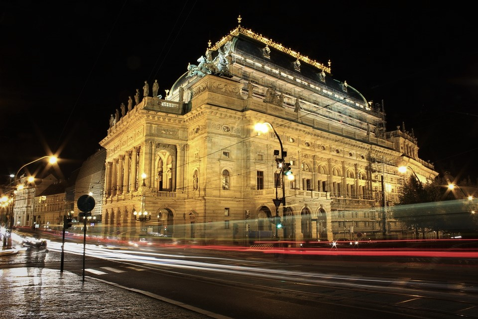

|
Αν μπείτε από την πλευρά της Μικρής Πόλης, μετρήστε το 8ο άγαλμα στα αριστερά σας. Θα βρεθείτε μπροστά στο άγαλμα του Αγ. Ιωάννη Νεπομούκ. Το άγγιγμα των ανάγλυφων πλακών στην βάση του αγάλματος φέρνει γούρι! |
Χρονολογείται από τον 13ο αιώνα και είναι συνήθως ασφυκτικά γεμάτη τόσο από τουρίστες όσο και από Τσέχους, ιδιαίτερα της άνοιξη και το καλοκαίρι. Είναι πραγματικά μια από τις πιο όμορφες γέφυρες στον κόσμο. Έχει μήκος 516 μέτρα και σχεδόν 10 μέτρα πλάτος, είναι αψιδωτή, και διακοσμείται σ΄ όλο το μήκος της με 30, κυρίως μπαρόκ αγάλματα και γλυπτά, τα περισσότερα από τα οποία χρονολογούνται από το 1700.
Πρόσβαση: με το τραμ 18, 17 & 2 - στάση Karlovy lazne (από την πλευρά της Παλιάς Πόλης) ή με το τραμ 22, 12, 20 & 22 - στάση Malostranske namesti (από την πλευρά της Μικρής Πόλης) ή με το μετρό γραμμής Α - στάση Staromestska.
|
Το σύμπλεγμα του Κάστρου, ενός από τα μεγαλύτερα στον κόσμο, περιλαμβάνει ιστορικά παλάτια, γραφεία, εκκλησίες, τείχη, κήπους και γραφικά μέρη από διάφορες εποχές. Όλα αυτά συνδέονται με δρομάκια, αυλές σκαλάκια και κήπους! |
Είναι το πιο εντυπωσιακό κτίσμα σε ολόκληρη την πόλη. Πρόκεται ουσιαστικά για ένα σύμπλεγμα κτισμάτων που βρίσκεται στην κορυφή ενός μεγάλου λόφου στην αριστερή όχθη του Ποταμού Μολδάβα. Διαφέρει από τα κλασικά κάστρα γιατί αρκετά τμήματά του χτίστηκαν σε διαφορετικά στυλ και η επέκτασή του έγινε περισσότερο οριζοντίως παρά καθέτως. Περιλαμβάνει τους βασιλικούς κήπους, το παλιό βασιλικό ανάκτορο, πύργους και εκκλησίες. Σήμερα εκεί είναι και η επίσημη προεδρική κατοικία.
Ανοιχτά:
Προαύλια: 6:00 - 22:00
Εσωτερικοί χώροι: 1.4.-1.10. = 9:00 - 17:00, 1.11.-31.3. = 9:00 - 16:00
|
Η Πράγα ήταν πάντα το σταυροδρόμι εμπορικών δρόμων και ήδη από το 11ο αιώνα δημιουργήθηκε εδώ μία υπαίθρια μεσαιωνική αγορά! Η πλατεία σχεδιάστηκε όταν οι πλούσιοι έμποροι άρχισαν να αγοράζουν οικόπεδα γύρω από την αγορά! |
Η πλατεία αυτή ήταν πάντα ένα μέρος γεμάτο ζωντάνια. Σήμερα είναι ένα δημοφιλές μέρος της πόλης τόσο για τους Τσέχους όσο και για τους επισκέπτες. Εκεί θα βρείτε τα ωραιότερα καφέ, εστιατόρια γκαλερί και μουσεία. Η μακρόχρονη ιστορία της πηγαίνει πίσω στον 11ο αιώνα όταν η πλατεία αποτελούσε την διασταύρωση αρκετών μακρινών δρόμων του εμπορίου και την χρησιμοποιούσαν σαν μέρος ανταλλαγής προϊόντων. Όταν βρίσκεσαι εκεί δεν ξέρεις τι να πρωτοθαυμάσεις....από τα τόσα πανέμορφα κτίρια με χρωματιστές προσόψεις. Ιδανικό μέρος για να απολαύσετε έναν καφέ ή ένα γεύμα και να νιώσετε σαν να γυρνάτε πίσω στο χρόνο.
Πρόσβαση: με το μετρό γραμμής Α - στάση Staromestska ή με το τραμ αρ. 18, 17 & 2 - στάση Staromestska
|
Η εκκλησία της Παναγίας του Τυν ήταν η κυρίαρχη εκκλησία στην Πλατεία της Παλιάς Πόλης της Πράγας και αναμφίβολα ένα από τα εντυπωσιακότερα κτήρια της πόλης. Τα εντυπωσιακά δίδυμα καμπαναριά της φαίνονται από μίλια γύρω από την εκκλησία! |
Κατασκευασμένη σε ύστερο γοτθικό ρυθμό, σχεδιάστηκε από τα μαγικά χέρια του Ματίας από το Άρας και του Πετρ Παρλέρ, των δημιουργών του καθεδρικού ναού του Αγίου Βίτου. Το στολίδι της είναι οι λεπτοί πύργοι, οι οποίοι ξεχωρίζουν ψηλά από τις στέγες της Παλιάς Πόλης.Η είσοδός της κρύβεται κάτω από την στοά των κτηρίων, που βρίσκονται μπροστά της. Το εσωτερικό της, σε αντίθεση με το εξωτερικό, έχει μπαρόκ διακόσμηση.
Πρόσβαση: με το μετρό γραμμής Α - στάση Staromestska ή με το τραμ αρ. 18, 17 & 2 - στάση Staromestska.
Ανοιχτά για το κοινό: Μάρτιος - Δεκέμβρης
Τρίτη - Σάββατο: 10:00 - 13:00, 15:00 - 17:00
Κυριακή: 10:00 - 12:00
Δευτέρα: κλειστά
Λειτουργίες (Σεπτέμβρης - Ιούνιος):
Κυριακή: 9:30 & 21:00
Τρίτη - Πέμπτη: 18:00
Παρασκευή: 15:00
Σάββατο: 8:00
Λειτουργίες (Ιούλιος & Αύγουστος):
Κυριακή: 9:30 & 21:00
Δευτέρα - Παρασκευή: 12:15
Σάββατο: 8:00
|
Το αστρονομικό ρολόι βρίσκεται σε μια πλευρά του Δημαρχείου και το παλαιότερο κομμάτι του φτιάχτηκε τον 15ο αιώνα! Ο Περίπατος των Αποστόλων είναι ένα show φιγούρων που γίνεται κάθε ώρα! |
Eίναι ένα από τα πιο παλιά και πιο περίτεχνα ρολόγια που έχουν ποτέ κατασκευαστεί γιατί δεν δείχνει απλά την ώρα αλλά ουσιαστικά συσχετίζει την κίνηση των πλανητών γύρω από τη γη καθώς και τις κινήσεις του ήλιου και της σελήνης. Κατά την διάρκεια της ημέρας από τις 9 το πρωί ως τις 9 το βράδυ το ρολόι λειτουργεί ανά μία ώρα. Η φιγούρα του Θανάτου κτυπάει ένα καμπανάκι και οι 12 Απόστολοι εμφανίζονται από πάνω. Ένας κόκορας ακούγεται και το ρολόι σημαίνει την ώρα. Τότε βγαίνει ένας Τούρκος που κουνάει το κεφάλι του με δυσπιστία, ένας Τσιγκούνης που κοιτάζει το πουγκί του με το χρυσάφι, και η Ματαιοδοξία που θαυμάζει τον εαυτό της σε ένα καθρέφτη. Όταν η ώρα πλησιάζει πάρτε θέση!
Πρόσβαση: με το μετρό γραμμής Α - στάση Staromestska ή με το τραμ αρ. 18, 17 & 2 - στάση Staromestska
Ανοιχτά:
Ιανουάριο - Σεπτέμβρη: Τρίτη - Κυριακή = 9:00 - 19:00, Δευτέρα = 11:00 - 22:00
Οκτώβρη - Δεκέμβρη: Τρίτη - Κυριακή = 9:00 - 20:00, Δευτέρα = 11:00 - 20:00
Είσοδος στις ιστορικές αίθουσες του Δημαρχείου, ρομανικά υπόγεια, γοτθικό παρεκκλήσιο & Πύργο του Αστρονομικού ρολογιού:
~βασική: 250 CZK
~μειωμένη: 150 CZK (παιδιά 6-15 ετών, φοιτητές έως 26 ετών, συνταξιούχοι άνω 65 ετών)
~μειωμένη: 50 CZK (παιδιά 4-6 ετών, συνταξιούχοι άνω 75 ετών, δημοσιογράφοι)
~οικογενειακό: 500 CZK (2 ενήλικες & μέχρι 4 παιδιά έως 15 ετών
|
Στον καθολικό ναό του Αγίου Βίτου στέφονταν οι βασιλείς της Βοημίας, ενώ αποτελούσε και τόπο ταφής τους! |
Βρίσκεται στην περιοχή του κάστρου και οι πύργοι του φαίνονται από πολλά σημεία της πόλης. Τα καμπαναριά, τα οποία είναι κομψές αλλά συνάμα επιβλητικές κατασκευές σε Γαλλικό Γοτθικό ρυθμό, υψώνονται πάνω από τα τείχη. Η είσοδος στον ναό είναι ελεύθερη και συνήθως είναι ανοιχτά ως τις 5 το απόγευμα το καλοκαίρι και ως τις 4 το χειμώνα.
Πρόσβαση: με το τραμ αρ. 22 - στάση Prazsky hrad
Ανοιχτά:
Νοέμβρης - Μάρτης = καθημερινά 9:00 - 16:00, Κυριακή 12:00 - 16:00
Απρίλης - Οκτώβρης = καθημερινά 9:00 - 17:00, Κυριακή 12:00 - 17:00
Λειτουργίες:
Δευτέρα - Πέμπτη = 7:00
Παρασκευή = 7:00 & 18:00
Σάββατο = 7:00
Κυριακή = 8:30 & 10:00
Είσοδος:
Περίπου στο πρώτο 1/4 του ναού η είσοδος είναι δωρεάν. Για να δει κανείς το υπόλοιπο ναό, πληρώνει εισιτήριο.
Το εισιτήριο ισχύει ταυτόχρονα και στα επιλεγμένα εσωτερικά του Κάστρου (Παλιό Βασιλικό Ανάκτορο, Βασιλική του Αγ. Γεωργίου, Χρυσό σοκάκι).
|
Στην κορυφή του σπιτιού που χορεύει υπάρχει ένας θόλος που ονομάζεται «Μέδουσα» λόγω του σχηματός του. Το 1996 το Σπίτι που χορεύει κέρδισε το βραβείο "Design of the Year" από την Αμερικανική εφημερίδα Times! |
Στην Τσέχικη γλώσσα είναι γνωστό ως Tancici Dum («Το Σπίτι που Χορεύει») επειδή μοιάζει αμυδρά με ένα ζευγάρι χορευτών. Είναι ένα κτίριο που ξεχωρίζει, χωρίς όμως να έρχεται σε αντίθεση με τα Νέο-Μπαρόκ, τα Νέο-Γοτθικά και τα Αρτ-Νουβό κτίρια για τα οποία φημίζεται η Πράγα. Στην ταράτσα του τελευταίου ορόφου υπάρχει ένα κορυφαίο Γαλλικό εστιατόριο με υπέροχη θέα, ενώ ανάμεσα στους ενοικιαστές του κτιρίου υπάρχουν και αρκετές πολυεθνικές επιχειρήσεις.
Ανοιχτά (εξέδρα με θέα & Glassbar): 9:00 - 00:00
Είσοδος στην εξέδρα με τη θέα: 100 CZK (Εάν όμως έχετε επισκεφτεί τον εκθεσιακό χώρο, κρατήστε το εισιτήριο για να δείτε την θέα που κόβει ανάσα, δωρεάν. Επίσης αν παραγγείλετε οτιδήποτε στο Glassbar έχετε δωρεάν πρόσβαση στην εξέδρα.).
Πρόσβαση: με το τραμ αρ. 17 & 5 - στάση Jiraskovo namesti, με το μετρό της κίτρινης γραμμής - στάση Karlovo namesti (έξοδος Palackeho namesti)
|  |
Το Μαύρο Θέατρο είναι διαφορετικό, τελείως διαφορετικό, καθώς το φως είναι άλλο και το σκοτάδι είναι άλλο. Κι αυτό γιατί το σκοτάδι του μαύρου θεάτρου είναι γεμάτο εκπλήξεις! |
Το Μαύρο Θέατρο της Πράγας είναι από τα πιο μοντέρνα θεατρικά σύνολα στον κόσμο. Αρχικά η τέχνη αυτή εμφανίστηκε στην Κίνα, όταν ακόμα το Θέατρο Σκιών ήταν σε πρώιμη κατάσταση.
Οι καλλιτέχνες χρησιμοποιούν ακόμα το μαύρο βελούδο και οι χορευτές ηθοποιοί κάνουν ακόμα πιο φαντασμαγορικό το θέαμα κρατώντας black light, για να δώσουν μέσα από σχηματισμούς την μορφή της κάθε ιστορίας που αφηγούνται με τις κινήσεις τους. Ουσιαστικά οι φιγούρες τους εμφανίζονται και πολλές επίσης στιγμές δίνουν την αίσθηση ότι είναι αόρατα όντα που ξαφνιάζουν τον θεατή που δεν ξέρει τι να περιμένει.
Πάρα πολλές ομάδες κάνουν περιοδείες σε όλο τον κόσμο, προσφέροντας μοναδικό θέαμα κάθε φορά. Οι ανθρώπινες σκιές εξιτάρουν την φαντασία και γεννούν συναισθήματα θαυμασμού. Το Μαύρο Θέατρο είναι ό, τι πιο πρωτότυπο μπορεί να συναντήσει κάποιος στον χώρο της τέχνης, ενώ η χρήση της παντομίμας ταξιδεύει το κοινό σε άλλες εποχές.
Mπορείτε να επισκεφθείτε εδώ τον επίσημο ιστότοπο του θεάτρου.